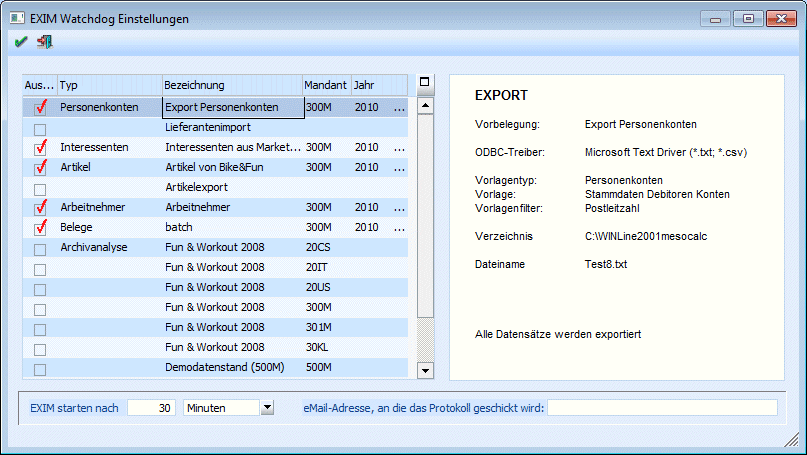

In diesem Fenster kann bestimmt werden, welche Aktionen beim "automatischem EXIM" verarbeitet werden sollen. Hier werden alle Einstellungen vorgeschlagen, die im WinLine START unter dem Menüpunkt Vorlagen/EXIM unter "Vorbelegung" gespeichert wurden. Zusätzlich werden - sofern das Programm mit dem Parameter /ALL gestartet wurde - auch alle Mandanten angezeigt, für die eine Archivanalyse durchgeführt werden kann.
In der Tabelle auf der linken Seite werden alle Vorbelegungen angezeigt. Klickt man eine Vorbelegung an, wird auf der rechten Seite die dazugehörige Information angezeigt. Diese beinhaltet die Art der Daten, die Datenquelle, den verwendeten Treiber etc.
Durch Aktivieren der Checkbox auf der linken Seite wird der entsprechende Eintrag für die automatische Abarbeitung in das Fenster "EXIM Watchdog" vorgesehen.

Wurde das Programm mit dem Parameter /ALL gestartet, kann in der Spalte "Mandant" der Mandant gewählt werden, für den die Aktion durchgeführt werden soll.
Wenn für mehrere Mandanten die gleichen Aktionen durchgeführt werden sollen, so müssen für jeden Mandanten eigene Vorbelegungen angelegt werden (weil die Vorbelegungen mandantenunabhängig gespeichert werden).
In der Spalte "Jahr" kann aus der Auswahllistbox jenes Jahr (sofern vorhanden) ausgewählt werden, für das die Vorbelegung abgearbeitet werden soll. Dabei ist zu beachten, dass die Vorbelegung für andere Jahre als das höchste vorhandene Wirtschaftsjahr nur dann durchgeführt werden kann, wenn der EXIM-Watchdog auch mit dem entsprechenden /YEAR-Parameter oder mit dem Parameter /ALL gestartet wurde.
D.h. ein Abarbeiten von Vorbelegungen für Vorjahre ist nur möglich, wenn:
ü 1. der EXIM-Watchdog mit dem Parameter /YEAR unter Angabe des benötigten Wirtschaftsjahres gestartet wurde, oder
ü 2. der EXIM-Watchdog mit dem Parameter /ALL gestartet wird, und in der Selektion das gewünschte Jahr angegeben wird.
Weitere Eingabefelder
Ø EXIM starte nach
Hier kann der Intervall/Einheit eingegeben werden, nach dem das automatische EXIM gestartet werden soll. Aus der nachfolgenden Auswahllistbox kann der Intervall (Sekunden, Minuten, Stunden) ausgewählt werden.
Ø Emailadresse, an die das Protokoll geschickt wird
Sofern auf dem PC, auf dem das Watchdog-Programm läuft, ein Mail-Client installiert ist, kann hier eine Emailadresse eingetragen werden. Diese Mail-Adresse wird aber nur dann verwendet, wenn das Programm mit dem Parameter /1 gestartet wird (das Programm wir aufgerufen, die Voreinstellungen werden 1 Mal durchgeführt und das Programm wird wieder geschlossen). Ansonsten hat dieses Feld keine Bedeutung.
Durch Drücken der F5-Taste wird der Eintrag in das Fenster "EXIM Watchdog" übernommen. Durch Drücken der ESC-Taste wird das Fenster geschlossen.